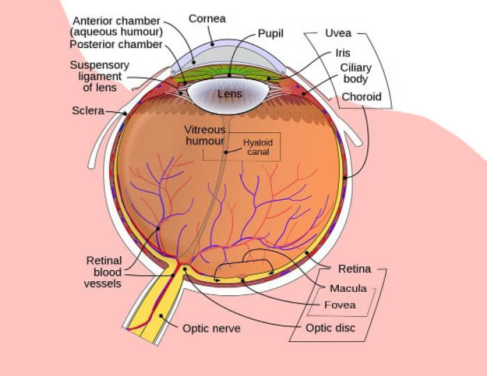

Un oftalmólogo de gran talento ha descubierto un nuevo método para restaurar la visión
borrosa y la ceguera total.
Rodrigo empezó a trabajar en este
proyecto hace unos años . Todo comenzó cuando su mujer tenía 50
años y su vista empezó a deteriorarse. Quería salvarla de la ceguera y
cumplir su promesa.
Al desarrollar la fórmula del producto
que creó, ayudará a su esposa y a muchas otras personas con baja visión.
En el reportaje de hoy, hablamos con el Dr. Rodrigo y descubra
cómo su producto milagroso puede ayudar a restaurar la mala visión
.
Dr. Rodrigo: Creé esta fórmula para salvar a mi mujer de la ceguera.
Dr. Rodrigo, usted hizo el suplemento porque quería ayudar a su esposa, ¿verdad?
Así es. La vista es uno de los sentidos más preciados. Ser testigo de un acontecimiento, de la naturaleza o de una actividad es algo muy valioso para la gente del mundo. Nuestros ojos son el espejo de nuestra alma, y cuando perdemos esa sensación, perdemos una parte importante de nuestra vida.
La mayoría de las veces, los problemas de visión aparecen gradualmente, como le ocurrió a mi mujer. Perder la vista no es agradable. La mejor manera de mantener los ojos sanos es someterse a un examen ocular con un oftalmólogo, entender los síntomas ahora y recibir el tratamiento adecuado para prevenir la ceguera.
Pero a veces eso tampoco funciona. Mi mujer ha intentado casi todo lo que ha podido, pero sin éxito.
¿Es eso lo que le hizo involucrarse?
Así es. Pude ver cómo sufría. No sólo le pusieron inyecciones en los ojos (¡imagínate lo que duele!), sino que además tuvo que tomar una medicación que la mareaba y debilitaba. Por desgracia, ninguno de estos métodos ayudó.
Todos los médicos dijeron que la enfermedad era incurable . Pero me dije: "Oye, tú también eres un oftalmólogo que sabe más que nadie sobre los ojos, deberías intentar encontrar la manera de ayudar a tu mujer". Así que empecé a trabajar en un proyecto. Estaba decidido a salvar a mi mujer, ¡y lo conseguí!
Cuéntenos más sobre lo que hizo.
Primero tenía que estudiar la estructura del ojo y averiguar cuáles son las principales causas de la ceguera. Investigué mucho sobre los cambios en la visión relacionados con la edad y los signos de problemas de salud ocular.
Y aprendí cómo estos cambios afectan a la capacidad del ojo para enfocar y dañar la visión. Sólo quería entender por qué mi mujer se quedó ciega a los 50 años .
En la foto: la conferencia que cambió el destino de la esposa del médico. Rodrigo y muchos otros discapacitados visuales
También empecé a asistir a muchas conferencias diferentes, a hablar con oftalmólogos de renombre, profesores y cirujanos oftálmicos para encontrar soluciones . En una de estas conferencias, conocí a un joven oftalmólogo que dio una interesante charla sobre los remedios naturales para la ceguera. ¡No puedo creer la suerte que tuve!
¡Por fin he encontrado la respuesta! Tras el discurso, tuve que hacer cola con otros muchos periodistas y médicos para saber más sobre la solución.
¿Y ha empezado a trabajar en su fórmula? ¿Puede decirnos algo más?
¿Sabía que, según algunos estudios recientes, el 90% de los problemas de visión están causados por la obstrucción del flujo sanguíneo a la retina? Como consecuencia, el cristalino y la córnea del ojo dejan de recibir las sustancias necesarias en cantidad suficiente. Así que su vista se está deteriorando.
 Foto: Los ojos pueden curarse solos si reciben los suficientes nutrientes.
Ahora, la idea de este joven médico se basa en aumentar el suministro de sangre a los distintos órganos de la visión del ser humano.
Esto reducirá el riesgo de ceguera no sólo en las primeras etapas de la enfermedad, sino también en las últimas, cuando el paciente está casi ciego.
Por eso empecé a trabajar con el Centro de Investigación Ocular de Madrid para desarrollar esta fórmula. Ha sido una experiencia increíble para mí. La fase de ensayo clínico ha concluido y el suplemento ya está disponible para el público en general.
Suena muy bien, pero ¿es posible devolver la vista a un paciente sin cirugía, especialmente si tiene más de 50 años?
Esta información es muy general e incorrecta. Es un hecho científico que todos los sistemas de nuestro cuerpo son capaces de autocurarse . Sólo necesitamos un poco de ayuda reduciendo la hinchazón, aumentando el flujo sanguíneo y acelerando la eliminación de células muertas y toxinas.
Así, con los suplementos adecuados, se pueden revertir muchos procesos, incluido el que nos interesa aquí que restaura la vista.
Siento ser demasiado escéptico, pero ¿puede su fórmula realmente restaurar la vista, especialmente para las personas que están casi ciegas?
¡La visión de mi esposa es el mejor testimonio de su pregunta! Yo también era escéptico, pero cuando mi mujer recuperó la vista después de tomar mi suplemento “” , cambié de opinión. El asunto es que mi fórmula puede ayudar a crecer nuevo tejido y aumentar el flujo sanguíneo al ojo.
Una dosis de nuestro suplemento puede activar alrededor de 930.000 células que participan directamente en el proceso de recuperación de la visión. Y esto ocurre cada vez que lo consumes. Así es como funciona. Y lo mejor de todo, ¡la fórmula es 100% natural! Contiene la mayor concentración de una combinación de extractos naturales. Esto es lo que hace que nuestro suplemento sea único, seguro y eficaz.
Mi esposa dijo que después de 2 días de usar hubo un cambio . Y esto ocurre con todos los pacientes. Su visión es más clara, su enfoque es mejor, incluso puede pasar más tiempo frente a una pantalla (¡y ya sabes lo mala que es la luz azul para nuestros ojos!). Después de un mes pudo leerle con facilidad a nuestros nietos, mi mujer está muy contenta de ver a sus nietos.
En la foto: Lisa, la esposa del Dr. Rodrigo, ahora puede leerle cuentos a su nieta sin ayuda de unas gafas.
¿Está distribuyendo esta maravilla? Tal vez ayude a muchas personas que lo necesitan.
De hecho, ya lo he hecho. Publiqué el artículo en revistas científicas y desde entonces he recibido muchas llamadas telefónicas y correos electrónicos, no sólo de periodistas, sino también de oftalmólogos y farmacéuticos.
Una empresa farmacéutica quería comprarme la fórmula , pero decidí no venderla.
En cualquier caso, no sé qué precio están dispuestos a cobrar por el suplemento que he creado. Pueden hacerlo muy caro. Muchas personas no podrán experimentar los beneficios de este suplemento. Sin duda, antepondrán los intereses comerciales a todo lo demás. Es un gran negocio y no les importan nuestros intereses.
¿no se venderá en las farmacias?
Sí, así es. Sólo queremos ofrecer precios asequibles a todos los que lo necesiten. Si está disponible en las farmacias, tendremos que subir los precios, y no queremos hacerlo. Por eso, sólo está disponible a través de este sitio web.
¡Wow, fantástico, le apoyo y esta es una gran solución! ¿Cuánto cuesta el suplemento?
Tenemos buenas noticias para sus lectores. ¡Ofrecemos un 50% de descuento por tiempo limitado! Si quieres probar , ¡ésta es tu oportunidad! Sólo tiene que rellenar el siguiente formulario y nuestro asesor se pondrá en contacto con usted.
Lo hacemos para que usted o sus seres queridos puedan experimentar los beneficios de nuestros suplementos.
Recibimos muchos testimonios en los que la gente nos agradece este suplemento tan eficaz y seguro. ¡Recomiendan a sus amigos y familiares¡¡Es uno de los mejores medios para difundir la palabra a los que lo necesitan!
Una vez recuperada la visión de mi mujer, por supuesto la compartimos con nuestros seres queridos, como nuestros hijos, parientes y familiares. Es muy bueno para mejorar y mantener la salud de los ojos, toma . Mis parientes, que suelen usar gafas, ¡llevan 3 semanas tomando el suplemento!
Foto: mantendrá tus ojos sanos durante años
, un revolucionario suplemento con extractos de mirto, ginkgo biloba, bayas de rauvolfia y aceite de tiburón que:
- Mejora la visión, diurna y nocturna
- Reduce el riesgo de daños oculares debidos a la edad
- Reduce la fatiga e irritación ocular debidas a la luz azul de la pantalla
- Asegura la salud de los ojos
- Reduce el riesgo de cataratas y glaucoma
¿Cuánto durará este descuento?
Esto durará hasta que se agote el producto , que es dentro de unas 3-4 semanas. Aunque no hay anuncios en la televisión o la radio, este producto es tan popular que los clientes anteriores lo han recomendado con frecuencia a sus amigos y familiares. Nos sorprendió mucho saber que tanta gente podía beneficiarse del producto . Y el último día de la promoción es el .
Alejandra
Descubrí este producto gracias a mi hermana. mejoró su vista en sólo 3 semanas. Tardé mucho tiempo en querer pedirlo finalmente. ¡Pedí tres paquetes a la vez mientras estaban en oferta! ¡Gracias!
Javier
También pedí 3. Yo también tengo visión borrosa, ¡espero que los suplementos del médico puedan ayudar a mis ojos!
Dr. Rodrigo
¡Claro que sí! ¡Ya lo verás después! ¡Su visión mejorará día a día!
Fernanda
Me picaban los ojos y los tenía llorosos durante mucho tiempo. Pero ahora están mucho mejor gracias a . Lo uso regularmente todos los días. Ahora las señales de tráfico son más claras y fáciles de leer, y por primera vez en años puedo conducir de noche sin problemas. Le he pedido a mi marido que tome este suplemento, ya que su vista se está deteriorando rápidamente y creo que le ayudará a él también.
Andrea
Llevo unos días tomando . ¡Y he sentido un cambio mucho mejor! Todo es más claro y más colorido.
Julia
¡Para ser honesta, siento que realmente es un milagro, he estado tratando de curar durante años el daño en mi ojo, nada había ayudado y ahora está mejorando! Este suplemento es recomendado por los oftalmólogos como una forma de frenar el daño ocular y reparar los vasos sanguíneos existentes en el ojo. Me encanta usar productos naturales en lugar de productos químicos que nunca funcionan.
Raúl
¡Qué milagro es este suplemento! El médico no sólo ayudó a su mujer, sino también a cualquier persona con problemas de visión.
Rita
Llevo unos meses tomando este suplemento y mi oftalmólogo me ha informado de que no hay avances en mi degeneración macular. De hecho, el médico ha dicho que mis ojos han mejorado. Así que seguiré tomándolo. ¿Hay algún inconveniente? 😊
Dr. Rodrigo
Gracias por la reseña. Pero quiero recordarles que, por favor, se aseguren de que no están comprando un producto falso. He oído hablar de un caso así. ¡ sólo puede comprarse en este sitio web!
Flor
¡Qué agradecida estoy por el descubrimiento del Dr. Rodrigo! Llevo dos meses tomando . Mi visión se ha recuperado por completo. Estoy muy contenta de ver a mis hijos y a mi marido con más claridad. ¡Quiero seguir tomándolo para obtener mejores resultados!
María
Hace poco me operaron para quitarme una catarata. A diferencia de muchas personas, aunque puedo ver bien de lejos, siento que mi visión no es tan aguda. Porque también tengo degeneración macular, y sólo va a empeorar. Mis ojos se aclaran cuando me despierto después de usar y puedo leer/ver más lejos. Digamos que quiero que mi visión mejore.
Valeria
La visión es un don muy valioso. A medida que envejecemos, nuestros ojos se vuelven vulnerables a daños como la degeneración macular. Ante estas amenazas, empecé a tomar este suplemento y este suplemento natural ha agudizado mi visión a la vez que me proporciona una protección segura que frena los efectos del envejecimiento de la vista. No tomo productos químicos agresivos ni medicamentos caros. Prefiero la forma natural. Sabía que tenía que tomarme en serio mi vista y cuidarla, lo que significaba que tenía que tomar este suplemento regularmente.
Paris
Me alegro de haber encontrado este suplemento con una combinación de extractos naturales y eficaces para la reparación de los nervios del músculo del ojo. El precio también es asequible. Llevo 1 año tomando este suplemento, mi visión diurna y nocturna ha empezado a mejorar, por lo que puedo salir a conducir de noche en mi querido coche. ¡Gracias por el descubrimiento!